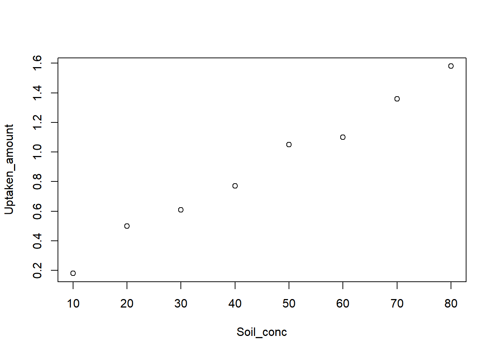

At a given temperature, uptake of a certain pesticide by soil is usually linearly related to its concentration in soil. To study this process, a researcher made the following observations under a constant temperature of 298 K.
| Observation # | Uptaken amount | Pesticide concentration in soil |
|---|---|---|
| # 1 | 0.18 |
10 |
| # 2 | 1.05 |
50 |
| # 3 | 0.50 |
20 |
| # 4 | 0.61 |
30 |
| # 5 | 1.58 |
80 |
| # 6 | 1.10 |
60 |
| # 7 | 1.36 |
70 |
| # 8 | 0.77 |
40 |
Do the observations support a linear relationship between the uptaken amount and soil concentration of this pesticide?
Before we talk about regression, let’s look at a simpler case, where we assume we have no information about the independent variable (concentration in soil). In this case, we shall simply make predictions merely based on observations of uptaken amounts. Now we have 8 data points about pesticide uptaken amounts, what is the best prediction for the 9th observation?
As you may quickly figure out, the best prediction for the 9th point is the sample mean. In statistics, we predict that the mean of the 9th point is the sample mean. Such a prediction method is also called a (linear) model. A linear model describes a continuous dependent variable as a function of one or more independent variables.
If the population mean (\(\mu_Y\)) is known, the model is then:
\[y = \mu_Y + \epsilon\] where \(\epsilon\) is the population error. Notice we may never know \(\mu_Y\), so we infer the prediction based on the sample mean (\(\overline{Y}\)):
\[\hat{y}=\overline{Y} \] which reads the estimator of the mean of any point (\(\hat{y}\)) is equal to the sample mean. And the residual (\(y - \hat y\)) is defined as the difference between observed (\(y\)) values and predicted values (\(\hat{y}\)).
The simple linear regression is a linear regression model with one independent variable. It models the linear relationship between two variables as accurately as possible. A simple linear regression between the dependent variable (y) and independent variable (x) is written as:
\[y = \beta_0 + \beta_1 x + \epsilon\]
Here \(\beta_0\) is the intercept population parameter, \(\beta_1\) is the slope population parameter, and \(\epsilon\) is the error term that can not be explain by the linear model (\(\beta_0 + \beta_1 x\)).
As \(\beta_0\) and \(\beta_1\) are unknown population parameters, our goal is to find estimated values \(\hat {\beta_0}\) and \(\hat {\beta_1}\) which would provide the best fit in some sense for the data points. The best fit here is defined as in the least-squares approach: a line that minimizes the sum of squared residuals \(\hat {\epsilon}\). For the ith element, the difference (\(\hat {\epsilon}_i\)) between observed value (\(y_i\)) and predicted value (\(\beta_0 + \beta_1 x_i\)) of the dependent variable.
\[\hat {\epsilon}_i = y_i - \beta_0 - \beta_1 x_i \] Given the dependent variable (y) and independent variable (x) samples:
\[\hat {\beta_1} = \frac {\sum_{i= 1}^{n} (x_i- \overline {x})(y_i- \overline {y})} {\sum_{i= 1}^{n} (x_i- \overline {x})^2} = \frac {s_{xy}} {s_x^2}\] where \(s_{xy}\) is the sample covariance, and \(s_{x}^2\) is the sample variance of the independent variable (x).
\[\hat {\beta_0} = \overline {y} - \hat {\beta_1} \overline {x}\]
where \(\overline {y}\) and \(\overline {y}\) is the sample mean of the dependent variable (y) and independent variable (x).
From making predictions without the dependent variable to the simple linear regression, we made one important improvement to the model by assuming there is a linear relationship between the dependent variable and independent variable. As such, we expect the model now should contain some information. In statistics, we say the total variability of the data set is equal to the variability explained by the regression line plus the unexplained variability.
Let’s recall the making predictions without the dependent variable case, where the total variability of the data set (or SST, sum square of total) is defined as:
\[SST = {\sum_{i= 1}^{n} (y_i- \overline {y})^2} \] This measures the total variability in the data. In the simple linear regression, as we assume a linear relationship between the dependent variable and independent variable, such a relationship should contribute to the total variability to some degrees. This kind of contribution is measured as the sum square of regression (SSR):
\[SSR = {\sum_{i= 1}^{n} (\hat {y_i}- \overline {y})^2} \] Finally, the unexplained variability is defined as the the sum square of error (SSE) or residuals:
\[SSE = {\sum_{i= 1}^{n} ({y_i}- \hat {y_i})^2} \]
\[SST = SSR + SSE\]
You may realize this is similar to the ANOVA analysis, where we partition SST into SSW and SSB. Actually, this is the linkage between regression and ANOVA.
We can further define the coefficient of determination (denoted R2 or r2) as the proportion of the variance in the dependent variable that can be explained by the independent variable.
\[R^2 = \frac {SSR} {SST}\]
Despite having different meanings, the coefficient of determination (R2) is equal to the square of the Pearson correlation coefficient (r) when the model is linear with a single independent variable.
Let’s analyze the section example with R:
# Observations
Soil_conc <- c(10, 50, 20, 30, 80, 60, 70, 40)
Uptaken_amount <- c(0.18, 1.05, 0.50, 0.61, 1.58, 1.10, 1.36, 0.77)
# Plot the scatter plot
plot(Soil_conc,Uptaken_amount)
## [1] 0.9933084# Get estimator of beta1 and beta0 manually
Beta1_hat <- cov(Soil_conc, Uptaken_amount)/sd(Soil_conc)^2
Beta0_hat <- mean(Uptaken_amount) - Beta1_hat*mean(Soil_conc)
# Predictions based on the linear model
Prediction <- Beta0_hat + Soil_conc*Beta1_hat
# Variance analysis
SST <- sum( (Uptaken_amount - mean(Uptaken_amount))^2 )
SSR <- sum( (Prediction - mean(Uptaken_amount))^2 )
SSE <- sum( (Uptaken_amount- Prediction)^2 )
# Check SST = SSR + SSE
SST - SSR - SSE## [1] 8.673617e-17## [1] 0.9866616## [1] 0.9866616Of course the simple linear regression can be done as:
# Fit a simple linear regression model between
# dependent variable (Uptaken_amount) and
# independent variable (Soil_conc)
reg <- lm( Uptaken_amount ~ Soil_conc )
# Print details of the linear model
summary(reg)##
## Call:
## lm(formula = Uptaken_amount ~ Soil_conc)
##
## Residuals:
## Min 1Q Median 3Q Max
## -0.076786 -0.035387 -0.003095 0.034851 0.077976
##
## Coefficients:
## Estimate Std. Error t value Pr(>|t|)
## (Intercept) 0.0446429 0.0452285 0.987 0.362
## Soil_conc 0.0188690 0.0008957 21.067 7.45e-07 ***
## ---
## Signif. codes: 0 '***' 0.001 '**' 0.01 '*' 0.05 '.' 0.1 ' ' 1
##
## Residual standard error: 0.05805 on 6 degrees of freedom
## Multiple R-squared: 0.9867, Adjusted R-squared: 0.9844
## F-statistic: 443.8 on 1 and 6 DF, p-value: 7.453e-07In the next section, we will examine the output in detail. Stay tuned.
Let’s use data from Exercise #3 in Section 13 again.
A researcher wants to study the relationship between Total organic carbon (TOC) and UV absorption around 240 nm. The researcher made 12 water samples from different lakes, and measured the corresponding TOC and UV absorption as follows:
TOC: 1.59, 1.79, 1.00, 0.45, 3.84, 2.30, 1.00, 3.20, 0.80, 2.20, 3.20, 2.10
UV: 0.144, 0.152, 0.113, 0.025, 0.227, 0.149, 0.014, 0.158, 0.042, 0.154, 0.173, 0.095
Can you give the best-fit linear relationship between the dependent variable (UV absorption) and independent variable (TOC)? Do this manually and verify your results with the lm() function.
To what degree can the variance in UV absorption be explained by TOC and by error?